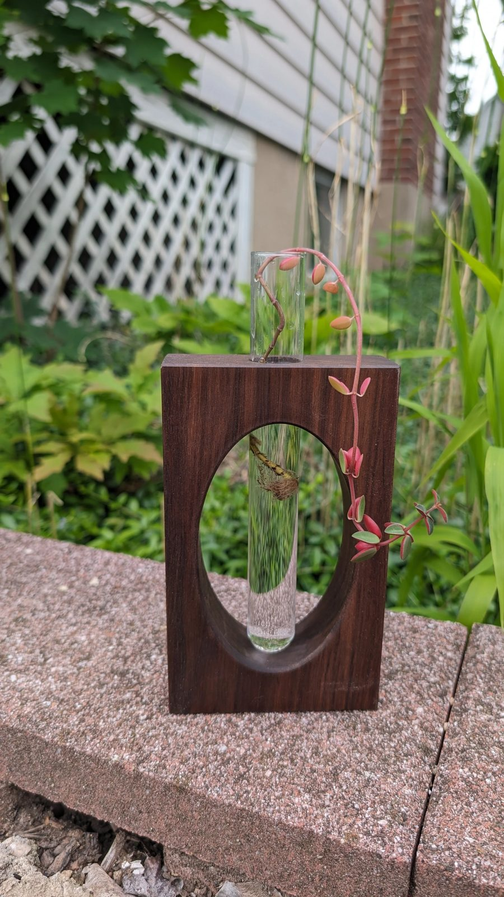
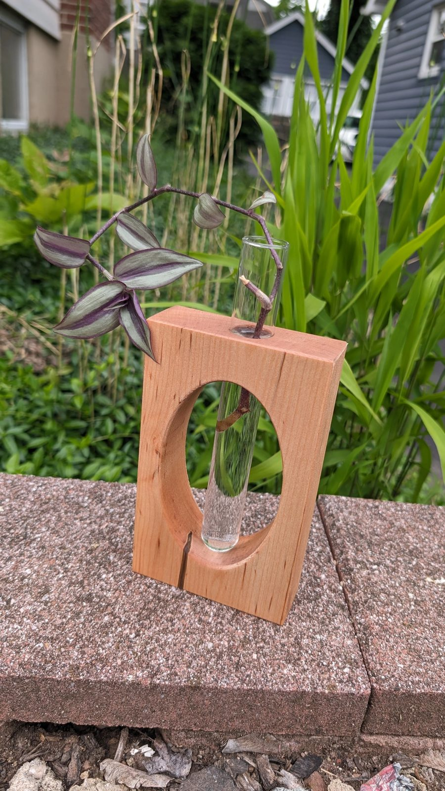
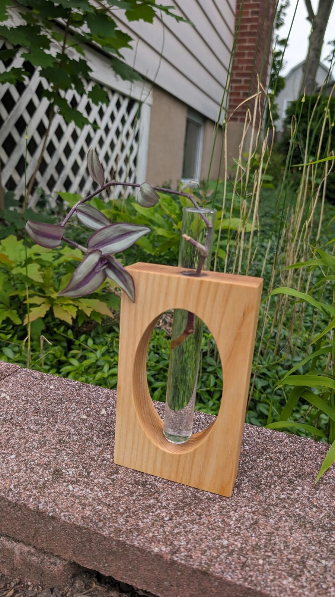
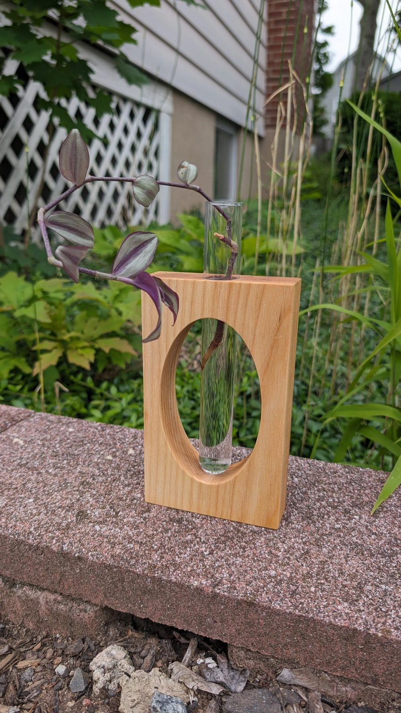
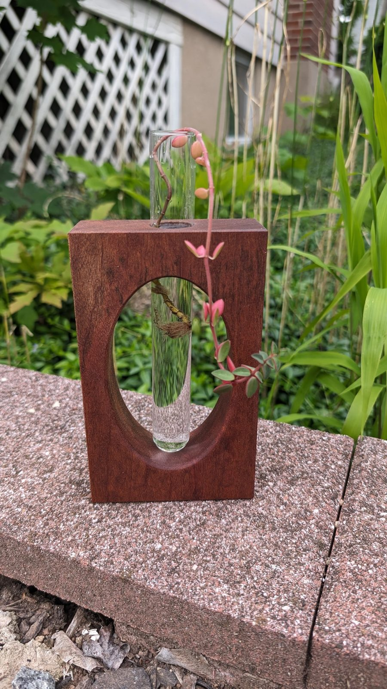
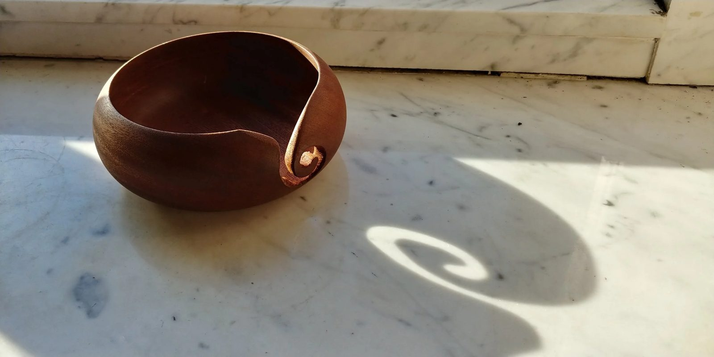
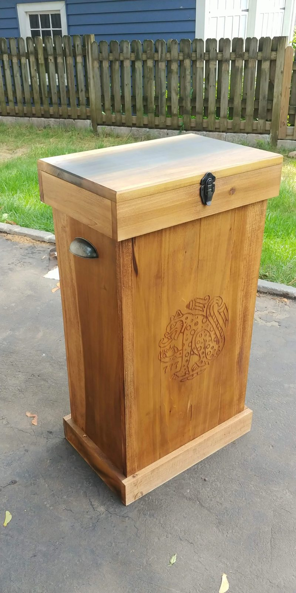
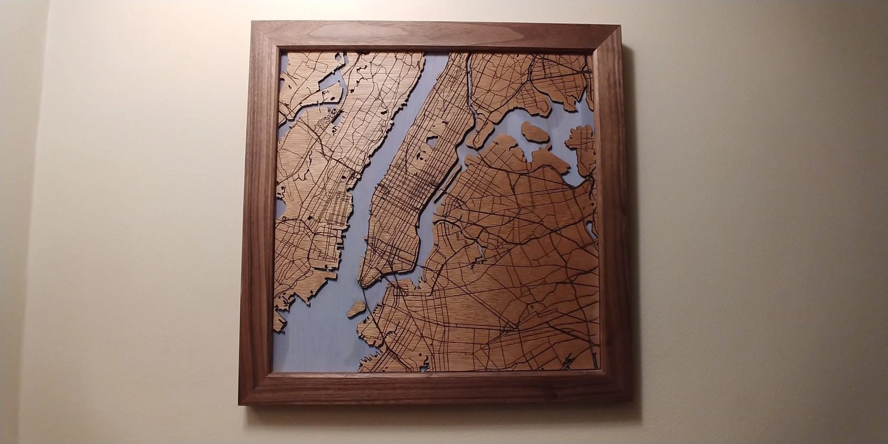
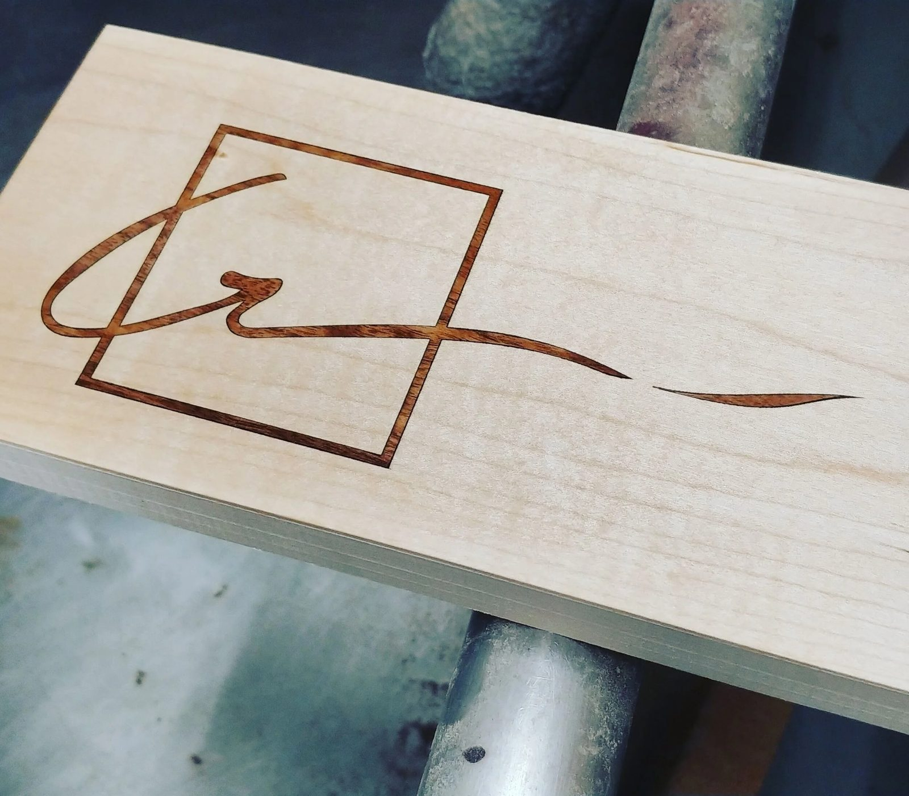
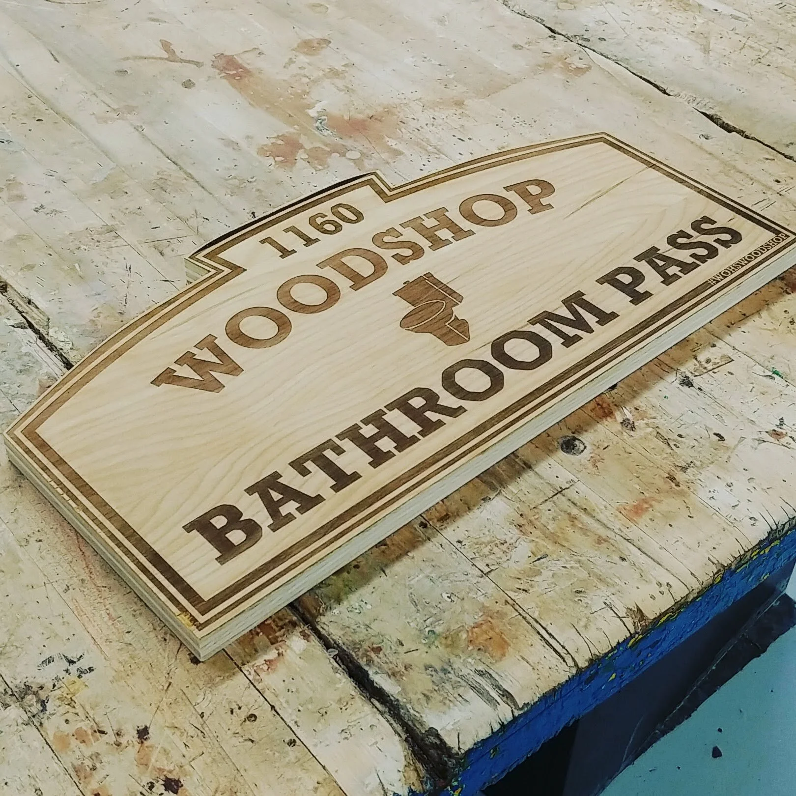

Home Goods
The small stuff — the pieces that sit on a windowsill or hang on a wall and quietly make a room better. Same bench, same hardwood, same finish as the furniture, just scaled down.
Bud vases
Local hardwood · mineral oil & beeswaxA glass tube set into a hardwood block, with a window cut through the front so you can watch the roots take hold on a cutting. Sized for a windowsill; the narrow neck slows evaporation and the tube lifts out for cleaning.







Turned & carved
One-offsPieces that come out of the shop when an interesting blank turns up — a yarn bowl with a curled slot to feed the working end, a lidded chest with a carved panel and cast-iron hardware.


Engraving & wall art
Laser-cut & engraved to orderLayered maps cut from hardwood veneer and framed in walnut, signs, monograms, logos — if it can be drawn, it can be burned into wood. Bring me an address, a coastline or a family name and I'll work out how to make it hang well.


